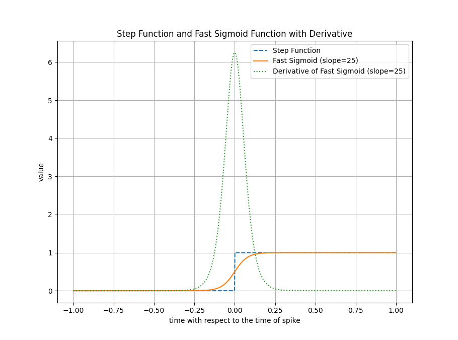
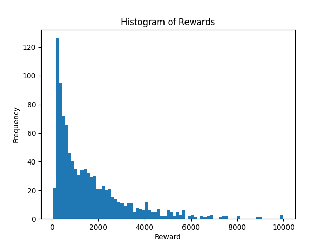
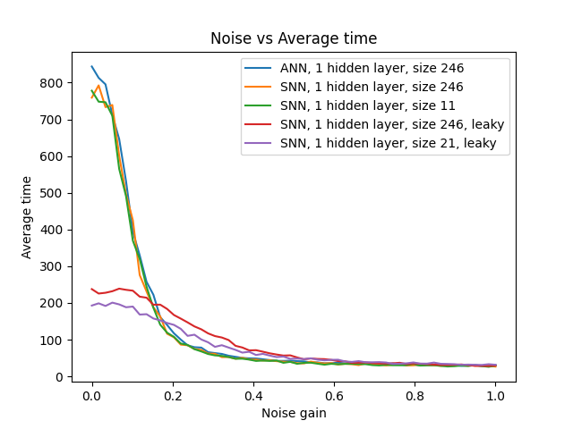
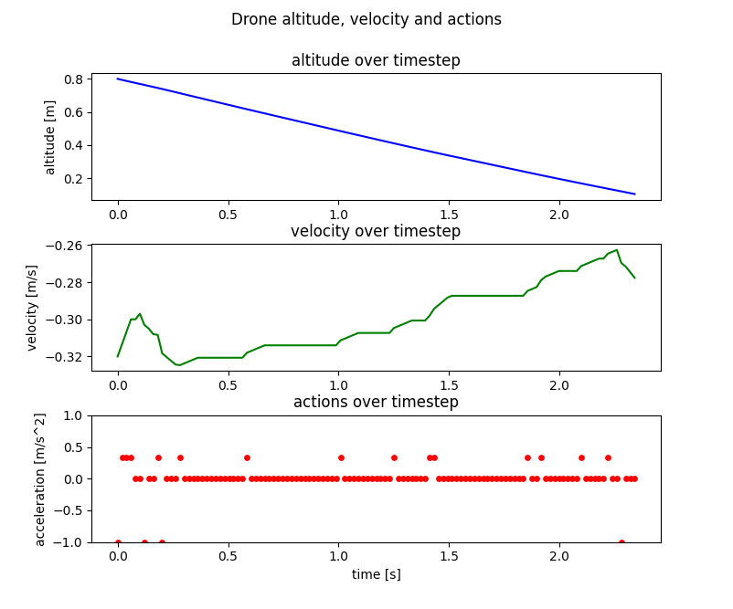

Within autonomous micro robotics, computational resources and energy constraints motivate the exploration of novel algorithms. This work explores the challenges and opportunities of deploying spiking neural networks (SNNs) in actor-critic reinforcement learning, progressing from simulated benchmarks to real-world drone control.
Part 1: Comparative Study on CartPole
The first phase compared SNN and ANN performance using the A2C (Advantage Actor-Critic) algorithm on the CartPole task, establishing fundamental insights about training dynamics and computational efficiency.
Why A2C for SNNs?
Unlike DQN, which requires experience replay and batch processing, A2C uses multiple workers operating in parallel, eliminating the need for experience replay. This opens doors to learning on resource-constrained systems where storing past experiences and batch training would be detrimental.
Network Architecture
To compare ANN to SNN fairly, both models use identical architectures—the only difference is replacing activation functions with Leaky Integrate-and-Fire (LIF) neurons. We tested two configurations:
- Single Layer: 4 inputs → 246 hidden neurons → actor/critic outputs
- Two Layer: 4 inputs → 128 → 128 → actor/critic outputs

Training comparison: ANN vs SNN with learnable leak (converges to β=0) vs SNN with fixed leak (β=0.65). SNNs converge slower but achieve comparable final performance.
Training with Surrogate Gradients
Due to the discrete spiking nature, traditional backpropagation cannot be directly applied. Surrogate gradients approximate the derivative of the spike function with a continuous, differentiable function during the backward pass.

The step function (forward pass) and surrogate function (backward pass) used for training SNNs with backpropagation.
Key Finding: Aggressive Pruning
One of the most significant discoveries was the effectiveness of pruning in SNNs. Dead neurons (0% spiking) and saturated neurons (100% spiking) can be removed without significant performance degradation:

Distribution of neuron activity in trained SNN, showing dead and saturated neurons that enable aggressive pruning.
Pruning Results
- SNN (β=0): 246 → 11 neurons (95.5% reduction)
- SNN (β=0.65): 246 → 21 neurons (91.5% reduction)
- Minimal performance degradation after pruning
Noise Robustness
An important finding for real-world deployment: SNNs with temporal dynamics (leaky neurons) show improved robustness at higher noise levels compared to both ANNs and non-leaky SNNs.

Noise robustness analysis. SNNs with temporal dynamics (leaky neurons) outperform ANNs at noise levels above 0.04.
Part 2: Real-World Drone Landing
Building on the CartPole findings, we extended the research to autonomous drone landing—a more challenging task requiring velocity estimation from altitude sequences and real-world deployment.
The Challenge
The drone controller receives only sonar altitude readings and must learn to:
- Estimate velocity from altitude sequences (no explicit velocity input)
- Modulate thrust based on height and velocity
- Land safely within velocity constraints
Critical Insight: Pre-training Required
Without supervised pre-training, SNNs struggled to develop velocity representations. Pre-training on a velocity estimation task reduced training time by an order of magnitude and enabled successful learning.

SNN controller performance in simulation. The network modulates thrust based on altitude and internally-estimated velocity.
Real-World Deployment
The trained SNN was deployed on a physical Parrot Bebop 2 MAV without additional tuning. The same network that worked in simulation achieved successful landings on real hardware—a significant validation of the approach.

The SNN controller deployed on a physical Parrot Bebop 2, demonstrating successful sim-to-real transfer.
Summary: What We Learned
Key Takeaways
- Training: SNNs train slower than ANNs but achieve comparable performance
- Pruning: SNNs can be pruned by 90%+ due to dead/saturated neurons
- Noise Robustness: Leaky SNNs outperform ANNs under noisy conditions
- Pre-training: Supervised pre-training is critical for complex tasks
- Sim-to-Real: SNNs can transfer from simulation to real hardware
What Came Next
This foundational work revealed that surrogate gradient settings significantly impact training. This insight led to our NeurIPS 2025 research on adaptive surrogate gradients, which develops principled methods for gradient scheduling and addresses the warm-up period challenge for sequential SNN training.
Resources
- Code: github.com/korneelf1/SpikingA2C
- Benchmarking: Results evaluated using NeuroBench framework